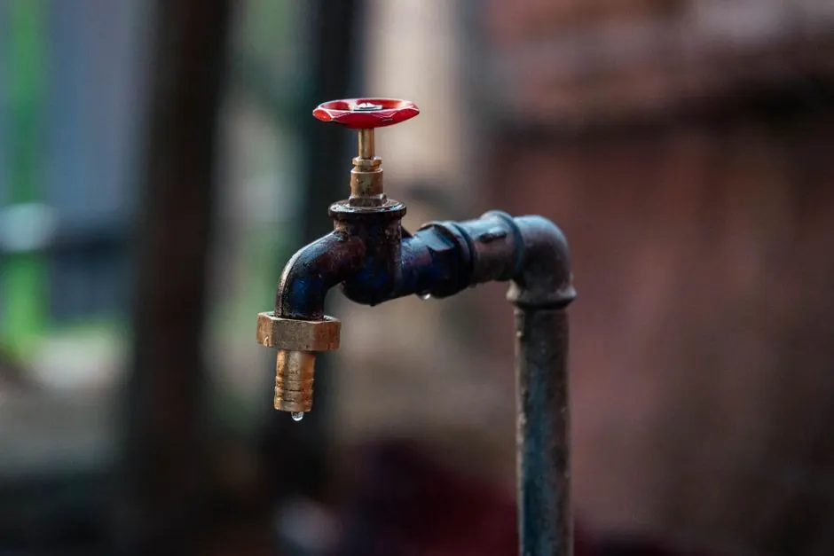
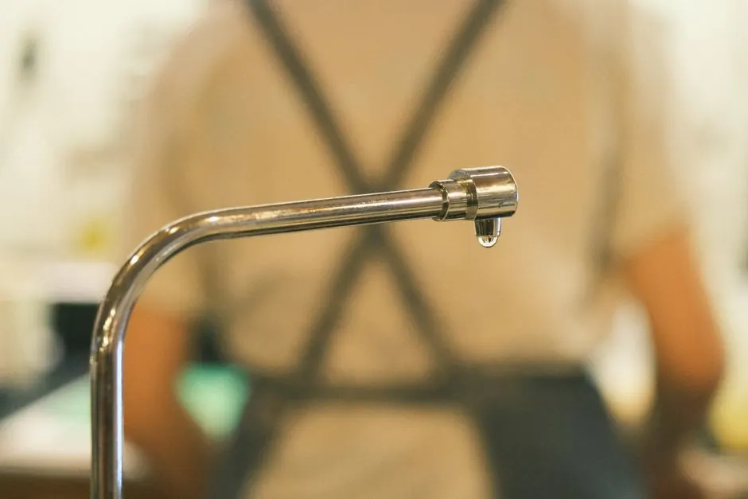
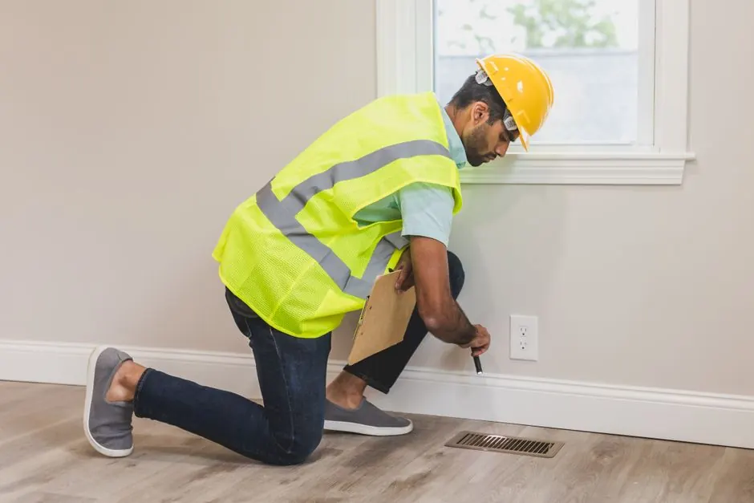

Expert slab leak services Boulder for your peace of mind
slab leak detection Boulder CO
slab leak detection Boulder CO is crucial for identifying hidden leaks that can cause extensive damage. Our slab leak services Boulder provide timely and effective solutions to protect your home.
Live dispatcherUpfront optionsBacked workmanship
What's included
What Our Slab Leak Detection Includes
Our slab leak detection Boulder CO service includes a comprehensive inspection, leak identification, and detailed repair recommendations. We focus on addressing the root cause of leaks to prevent future issues.
Comprehensive inspection
A thorough inspection of your slab foundation using advanced tools to identify potential leaks and assess damage.
Leak identification
Pinpointing the exact location of leaks to minimize disruption during repairs.
Repair recommendations
Providing detailed options for repair solutions, including materials and methods suited for your specific situation.
Final assessment
Conducting a final assessment after repairs to ensure everything is functioning correctly and providing maintenance tips.
Service overview
Understanding slab leak detection Boulder CO
Slab leak detection Boulder CO is a specialized service that identifies leaks in the plumbing beneath your foundation, often using advanced tools like infrared cameras and acoustic listening devices. This process is vital for preventing severe water damage and mold growth.
Local Boulder homeowners often face unique challenges due to the region's soil conditions and varying temperatures. Slab leak services Boulder are essential, especially when signs of leaks appear, such as unexplained water bills or damp spots on floors.

How we workWe verify the cause, compare realistic options, and confirm the repair before we leave.
The service timeline
Our slab leak detection process
The process flexes to the condition, but these checkpoints keep decisions clear.
Initial consultation
During the initial consultation, our certified technicians assess your home's plumbing system and discuss any concerns you may have regarding potential leaks.
Comprehensive inspection
Using advanced leak detection equipment, we conduct a thorough inspection of your slab foundation. This includes utilizing infrared cameras and moisture meters to identify hidden leaks.
Leak identification
Once potential leaks are detected, we pinpoint their exact location. This step is crucial for minimizing disruption during repairs and ensuring effective solutions.
Repair recommendations
After identifying leaks, we provide detailed recommendations for repairs. Our team discusses options, including epoxy sealants and pipe insulation, to ensure long-lasting solutions.
Final walkthrough
After repairs are completed, we conduct a final walkthrough to ensure everything is functioning correctly. We also provide maintenance tips to help prevent future leaks.
Tools & methods
Tools and Methods for Slab Leak Detection
Purpose-built equipment, used by trained technicians, so the job is done accurately the first time.
Infrared Camera
Used to detect temperature differences in walls and floors, identifying hidden leaks.
Moisture Meter
Measures moisture levels in materials, helping to pinpoint the source of leaks.
Acoustic Listening Devices
Amplifies sounds of leaking water, allowing for precise leak location.
LeakTronics Equipment
Specialized tools for non-invasive leak detection in plumbing systems.
Use cases
When to Use Slab Leak Detection
These examples show how the service framework adapts rather than forcing every call through one repair.

Before and After: Foundation Stability
A North Boulder homeowner experienced cracks in their foundation due to undetected leaks. → Following our detection service, the leaks were repaired, stabilizing the foundation and restoring peace of mind.
Before and After: Mold Remediation
A Downtown Boulder resident found mold in their home caused by a slab leak. → After our detection and repair services, the mold was eliminated, and the home was restored to a safe environment.
Problems we solve
Problems Our Slab Leak Detection Solves
Our slab leak detection services tackle common issues that can lead to significant damage if left unaddressed.
Hidden water damage due to slab leaks
Our slab leak detection Boulder CO services identify hidden leaks early, preventing costly damage and ensuring your home remains safe.
Increased water bills
We detect leaks quickly, helping you regain control of your water usage and lower your bills.
Foundation instability
Our expert team provides timely detection and solutions to protect your foundation from damage.
Pricing process
Understanding Slab Leak Detection Pricing
$200 - $600 depending on scope
Complexity of the leak
More complex leaks may require advanced detection methods, increasing the overall cost.
Accessibility of plumbing
If plumbing is difficult to access, additional labor may be necessary, impacting pricing.
Age of the home
Older homes may have outdated plumbing systems, which can complicate leak detection and repair.
What is slab leak detection and how much does it cost in Boulder?
Slab leak detection typically costs between $200 and $600 in Boulder, depending on the complexity of the leak. This service involves identifying leaks under your foundation using specialized equipment.
What are the signs of a slab leak in Boulder?
Signs of a slab leak include damp spots on floors, increased water bills, and the sound of running water when no taps are in use. If you notice these signs, it's crucial to call for slab leak services Boulder.
How to choose a slab leak detection service in Boulder?
When selecting a slab leak detection service in Boulder, look for licensed professionals with proven track record, advanced detection equipment, and transparent pricing. Experience is also key.
How long does slab leak detection take?
Typically, slab leak detection in Boulder takes between 1 to 3 hours, depending on the size of your home and the complexity of the plumbing system.
Ready when you are
Get reliable slab leak detection Boulder CO today!
Contact us for prompt and professional slab leak detection services. Protect your home from costly damage with our expert solutions.

Talk with the local team
Request Slab Leak Detection
We're here to help with all your leak detection needs in Boulder. Reach out to us during business hours for a prompt response.